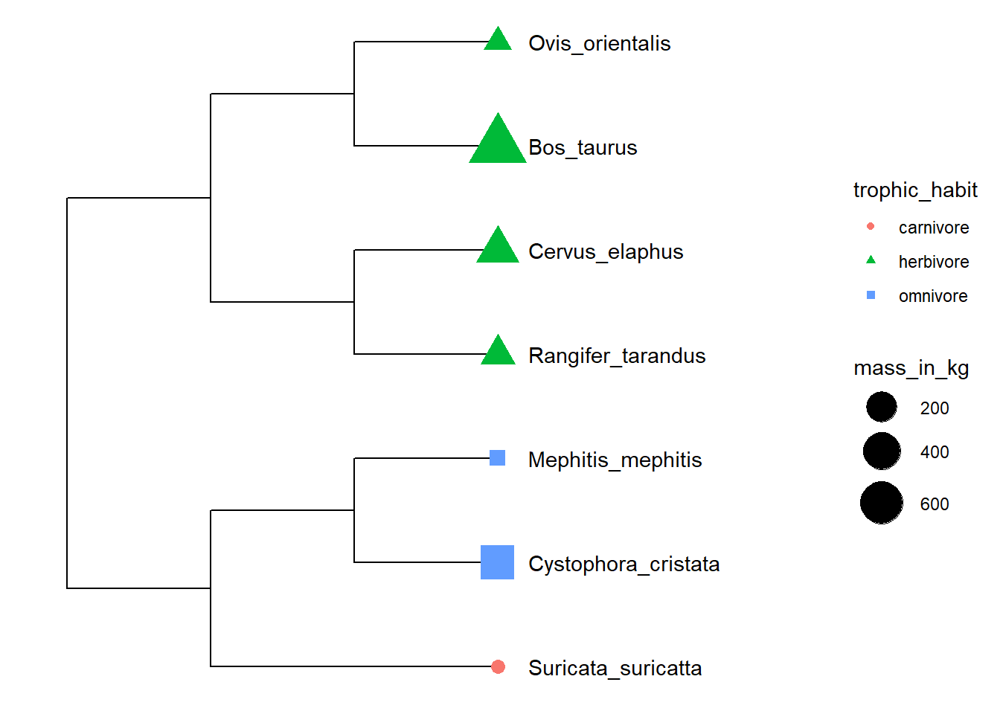
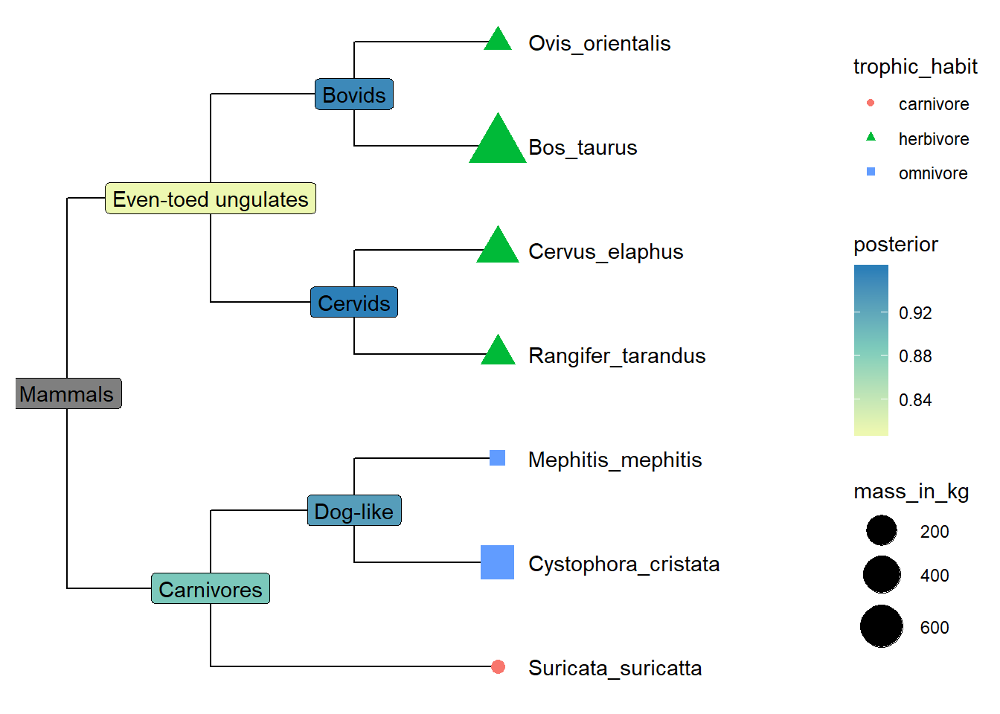
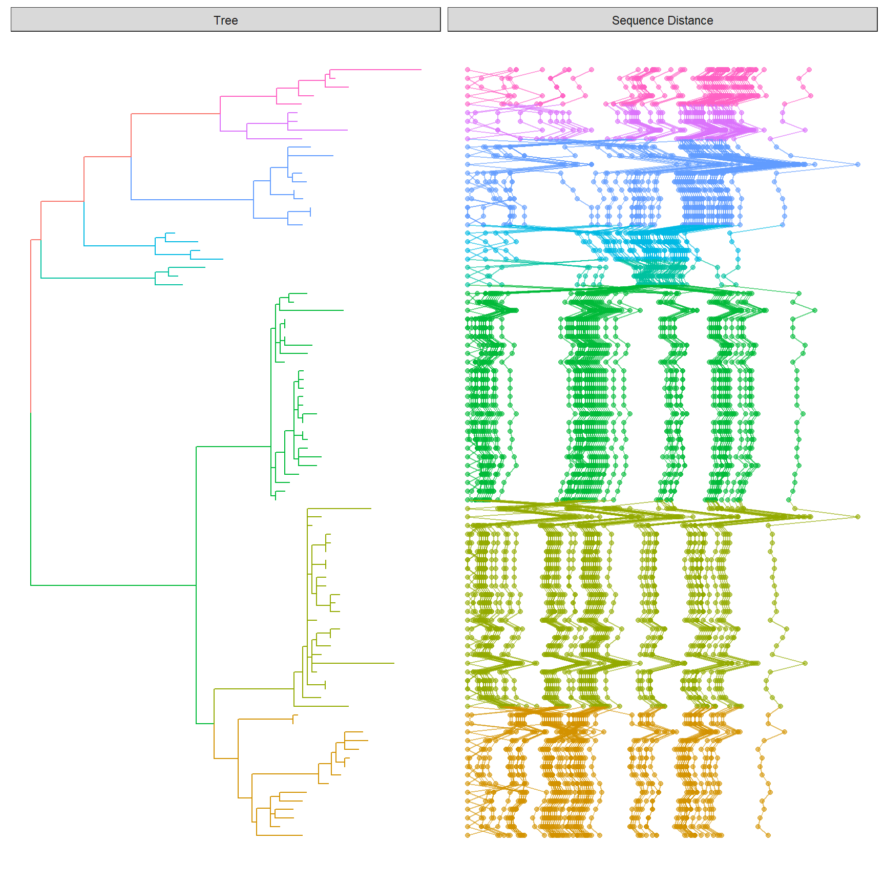
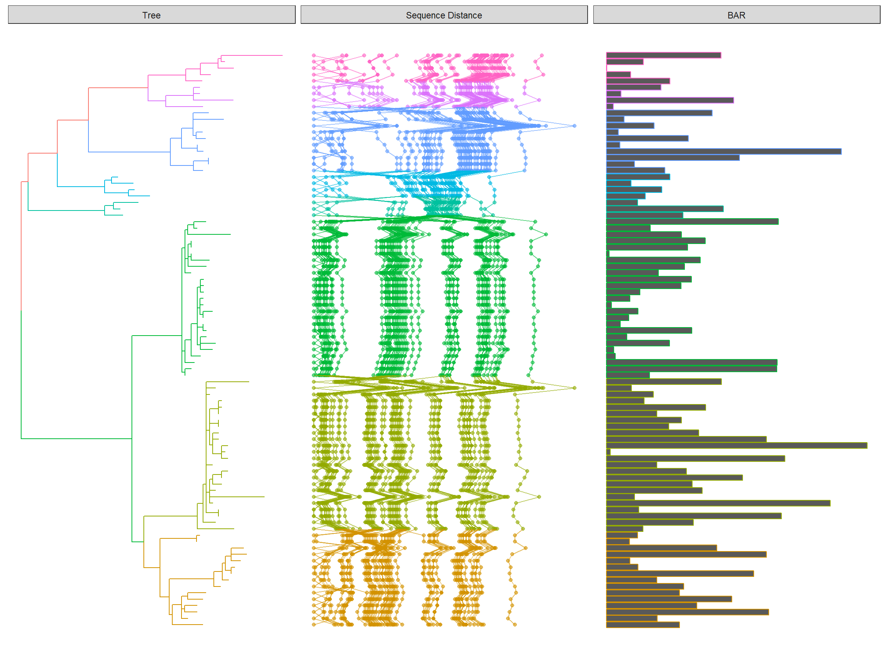

This lesson demonstrates how to map and visualize associated data on phylogenetic tree using ggtree. The materials were modified from the ggtree paper.
This lesson covers two general methods for mapping and visualizing associated data on phylogeny. Method 1 allows external data to be mapped on the tree structure and used as visual characteristic in tree and data visualization. Method 2 plots the data with the tree side by side using different geometric functions after reordering the data based o the tree structure.
One of the demands of mapping data is to link the data, such as phenotypic, experimental data and clinical data, to the tree structure, to display the data on the tree directly or use the data as visual characteristics of the tree branches/nodes. ggtree provides an operator, %<+%, for attaching external data to the ggtree object. Any data frame that contains a column of “node” or first column of taxa labels can be integrated using the %<+% operator. Multiple data sets can be attached progressively. When the data are attached, all the information stored in the data serve as numerical/categorical node attributes and can be directly used to visualize the tree by scaling the attributes as different colors or line sizes, label the tree using the original values of the attributes or parsing them as math expression, emoji or silhouette image.
This example uses the %<+% operator to integrate taxon information and maps the data to different color and shape of symbolic points.
library(ggplot2)
library(ggtree)
x <- read.tree("data/tree_boots.nwk")
info <- read.csv("data/tip_data.csv")
p <- ggtree(x) %<+% info + xlim(-.1, 5)
p2 <- p + geom_tiplab(offset = 0.2) +
geom_tippoint(aes(shape = trophic_habit, color = trophic_habit, size = mass_in_kg)) +
theme(legend.position = "right") + scale_size_continuous(range = c(3, 10))
print(p2)

Evolutionary data are heterogeneous and many data types cannot be displayed on the tree directly, such as genetic information at a pan-genome scale, multiple sequence alignment, and species abundance distributions. The issue is that we need to reorder the plot based on the tree structure if we want to align the plot with the tree side by side to interpret the data in evolutionary context. This is quite challenging as tree structure is not human friendly and need expertise in programming. Consequenctly, ggtree provides the facet_plot function internally reorders the input data based on the tree structure and visualizes the data at the specific panel by the geom function.
The following example re-create Figure 1 published on https://jvi.asm.org/content/91/21/e01285-17.
library(Biostrings)
library(tidyr)
library(ggplot2)
library(ggtree)
tree <- read.tree("data/HPV58.tree")
clade <- c(A3 = 92, A1 = 94, A2 = 108, B1 = 156, B2 = 159, C = 163, D1 = 173, D2 = 176)
tree <- groupClade(tree, clade)
## visualize the tree with tip labels and tree scale
p <- ggtree(tree, aes(color = group), ladderize = FALSE)
tipseq_aln <- readDNAStringSet("data/HPV58_aln.fas")
## calculate pairwise hamming distances among sequences
tipseq_dist <- stringDist(tipseq_aln, method = "hamming")
## calculate percentage of differences
tipseq_d <- as.matrix(tipseq_dist) / width(tipseq_aln[1]) * 100
## convert the matrix to tidy data frame for facet_plot
dd <- as.data.frame(tipseq_d)
dd$seq1 <- rownames(tipseq_d)
td <- gather(dd,seq2, dist, -seq1)
## visualize the sequence differences using dot plot and line plot
## and align the sequence difference plot to the tree using facet_plot
p2 <- facet_plot(p, panel = "Sequence Distance", data = td, geom_point,
mapping = aes(x = dist, color = group), alpha = .6) %>%
facet_plot(panel = "Sequence Distance", data = td, geom = geom_path,
mapping=aes(x = dist, group = seq2, color = group), alpha = .6)
print(p2)
ggstance::geom_barh layer) with the p2 show above.